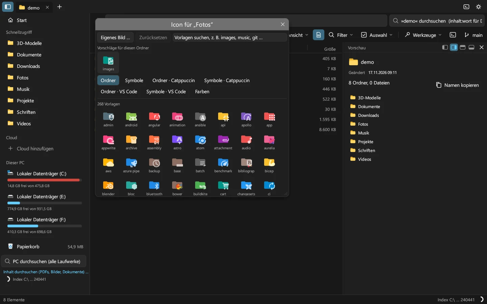
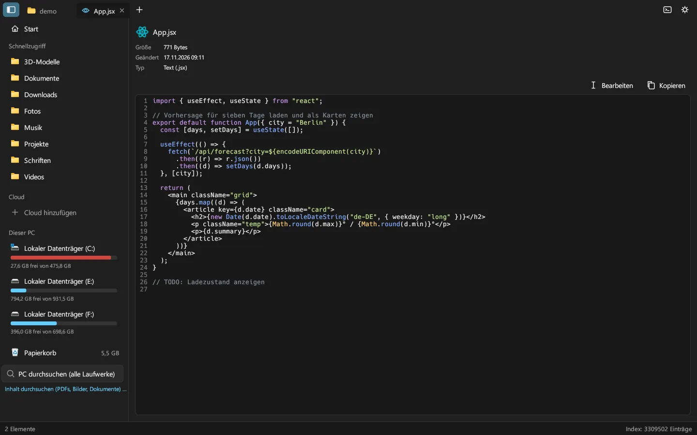
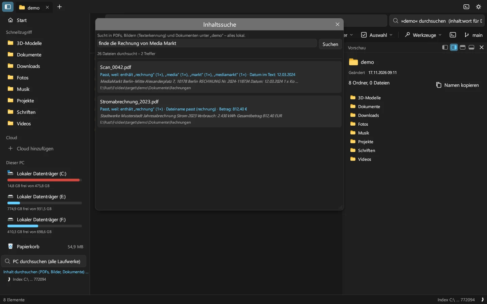
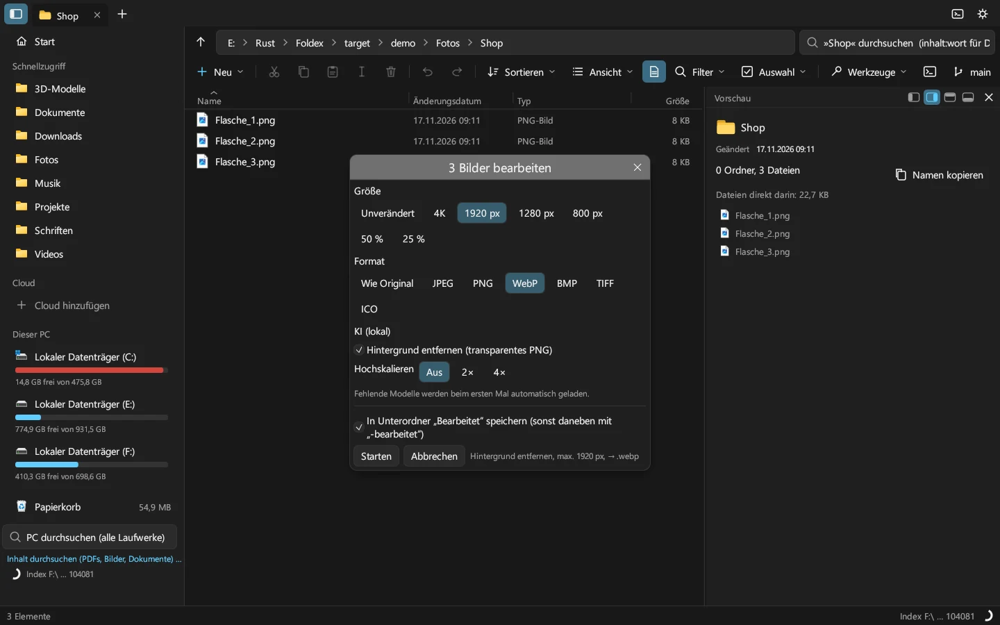
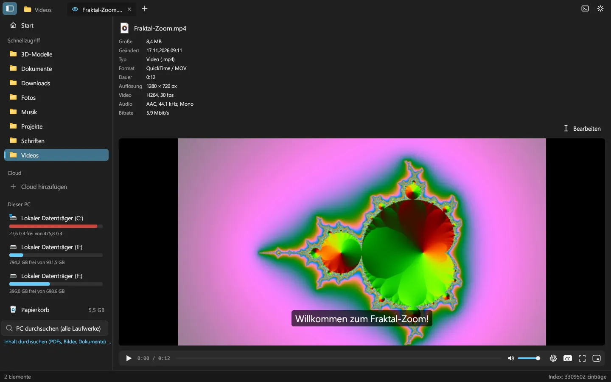

NewNeuVersion 0.9.3 – free for WindowsVersion 0.9.3 – kostenlos für Windows
The file explorer that simply does more.
Der Datei-Explorer, der einfach mehr kann.
Foldex is fast, light on memory and opens almost any file instantly – code, Office, PDFs, videos, 3D models and fonts. Rename photo.heic to photo.jpg and it converts. Plus local AI, cloud drives, terminal and Git in one window.
Foldex ist schnell, spart Arbeitsspeicher und zeigt fast jede Datei sofort an – Code, Office, PDFs, Videos, 3D-Modelle und Schriften. Aus foto.heic wird durch Umbenennen in foto.jpg ein echtes JPG. Dazu lokale KI, Cloud-Laufwerke, Terminal und Git in einem Fenster.
100+formats in Quick LookFormate in der Schnellansicht
RenameUmbenennenis convertingist Konvertieren
LocalLokalAI without the cloudKI ohne Cloud-Zwang
Explorer
A file explorer the way it should be
Ein Explorer, wie er sein sollte
Tabs, split views, real folder sizes and a preview that thinks ahead – everything stays smooth even in folders with tens of thousands of files.
Tabs, geteilte Ansichten, echte Ordnergrößen und eine Vorschau, die mitdenkt – auch in Ordnern mit zehntausenden Dateien bleibt alles flüssig.
FoldersOrdner
Folder sizes at a glance
Ordnergrößen auf einen Blick
Foldex calculates folder sizes in the background and remembers them. Sort by size and you instantly see what eats your disk.
Foldex rechnet Ordnergrößen im Hintergrund aus und merkt sie sich. Nach Größe sortieren zeigt sofort, was Platz frisst.
Tabs and split tiles, drag tabs between windows
Instant filter in the folder and indexed search across all drives
Filters, groups, views: details, list, grid, large icons
Undo for copy, move, rename and delete
Tabs und geteilte Kacheln, Tabs zwischen Fenstern ziehen
Sofortsuche im Ordner und Index-Suche über alle Laufwerke
Filter, Gruppen, Ansichten: Details, Liste, Raster, große Symbole
Rückgängig für Kopieren, Verschieben, Umbenennen und Löschen
DevelopersEntwickler
Git, terminal and editor built in
Git, Terminal und Editor eingebaut
Changed files are marked, the branch sits in the toolbar and a terminal opens right in the folder. Code is shown with syntax colours for around 200 languages – and you can edit it.
Geänderte Dateien sind markiert, der Zweig steht in der Leiste, ein Terminal öffnet sich direkt im Ordner. Code wird mit Syntaxfarben für rund 200 Sprachen angezeigt und lässt sich bearbeiten.
Git status per file, switch branches, browse commits
Terminal with completion (PowerShell, cmd, Bash)
Open in VS Code, Cursor, Zed and more with a right-click
Git-Status je Datei, Zweig wechseln, Commits ansehen
Terminal mit Vervollständigung (PowerShell, cmd, Bash)
Öffnen in VS Code, Cursor, Zed und Co. per Rechtsklick
PersonalPersönlich
Folder icons that match the content
Ordner-Icons, die zum Inhalt passen
When you change a folder icon, Foldex first suggests icons that fit what's inside – pictures, code, Git, music, documents. Plus over a thousand symbols from three icon themes, colours or your own image.
Beim Ändern eines Ordner-Icons schlägt Foldex zuerst Vorlagen vor, die zum Inhalt passen – Bilder, Code, Git, Musik, Dokumente. Dazu über tausend Symbole aus drei Icon-Themes, Farben oder ein eigenes Bild.

ConvertKonvertieren
Change the extension – get the format
Endung ändern – Format bekommen
No converter websites, no extra app. Rename a file to a new extension and Foldex really converts it – images, audio, video, documents and archives.
Keine Konverter-Webseiten, kein Extra-Programm. Datei umbenennen, neue Endung eintippen – und Foldex wandelt sie wirklich um: Bilder, Audio, Video, Dokumente und Archive.
Rename to convertUmbenennen = Konvertieren
F2, type the new extension, done
F2, neue Endung tippen, fertig
Foldex recognises a convertible format while you rename and converts in the background with a progress bar. If you switch to a completely different kind of file, it asks first.
Foldex erkennt beim Umbenennen ein umwandelbares Format und konvertiert im Hintergrund mit Fortschrittsbalken. Bei einem Wechsel in eine ganz andere Dateiart fragt es vorher nach.
The original goes to the recycle bin – undo brings it back
Many files at once: right-click → Convert
Cancel any time, half-finished files are removed
Das Original landet im Papierkorb – Rückgängig holt es zurück
Viele Dateien auf einmal: Rechtsklick → Konvertieren
Jederzeit abbrechen, halbfertige Dateien werden entfernt
holiday.heic
holiday.jpg
Converted to JPG · original in the recycle binIn JPG umgewandelt · Original im Papierkorb
ImagesBilderJPG PNG WebP AVIF GIF SVG ICO PDF …AudioMP3 WAV FLAC AAC OGG Opus …VideoMP4 MOV MKV WebM AVI GIF …DocumentsDokumentePDF DOCX ODT RTF TXT HTML MD EPUBArchivesArchiveZIP 7z TAR.GZ TAR.XZ TAR.ZST
Quick LookSchnellansicht
Quick Look for almost everything
Schnellansicht für fast alles
Press the space bar – and the file is there. Without opening another app.
Leertaste drücken – und die Datei ist da. Ohne ein weiteres Programm zu öffnen.

PDF
View pages and copy text – even from scans via OCR.
Seiten ansehen, Text kopieren – auch aus Scans per Texterkennung.
ImagesBilder
Photos and graphics instantly large, with zoom and image info.
Fotos und Grafiken sofort groß, mit Zoom und Bildinfos.
ArchivesArchive
Look inside ZIP, 7z and RAR without extracting.
In ZIP, 7z und RAR hineinsehen, ohne zu entpacken.
Artificial intelligenceKünstliche Intelligenz
AI that stays with you
KI, die bei dir bleibt
Foldex works with Claude, OpenAI and other services – or fully local with your own models. Files, photos and recordings only leave your PC if you want them to.
Foldex arbeitet mit Claude, OpenAI und anderen Diensten – oder komplett lokal mit eigenen Modellen. Dateien, Fotos und Aufnahmen verlassen den PC nur, wenn du es willst.
Content searchInhaltssuche
“Find the invoice from the electronics store”
„Finde die Rechnung von Media Markt“
Content search reads PDFs, documents and images (with OCR) and explains every hit: matched terms, date, amount and the spot in the text.
Die Inhaltssuche liest PDFs, Dokumente und Bilder (mit Texterkennung) und erklärt bei jedem Treffer, warum er passt: gefundene Begriffe, Datum, Betrag und die Stelle im Text.
Works on scanned PDFs and photos of receipts too
Recognised text is cached – the second search is instant
Runs entirely on your PC
Auch gescannte PDFs und Fotos von Belegen
Erkannter Text wird zwischengespeichert – die zweite Suche ist sofort fertig
Läuft komplett auf deinem PC

Image generationBilder erzeugen
Create images – with style presets
Bilder malen – mit Stil-Vorlagen
Image mode generates pictures locally with models like SD-Turbo or FLUX. Style chips such as Photo, Anime, Oil painting, Logo or Pixel art extend the prompt, including a matching negative prompt.
Im Bild-Modus entstehen Bilder lokal mit Modellen wie SD-Turbo oder FLUX. Stil-Chips wie Foto, Anime, Ölgemälde, Logo oder Pixel-Art ergänzen den Prompt samt passendem negativen Prompt.
ShortcutsKurzbefehle
Over 50 skills behind a slash
Über 50 Skills mit einem Schrägstrich
Type / in the chat and pick a shortcut – each one stands for a carefully written prompt. Add your own in a small JSON file.
Im Chat / tippen und einen Kurzbefehl wählen – jeder steht für einen ausgefeilten Prompt. Eigene Kurzbefehle legst du in einer kleinen JSON-Datei an.
/aufräumenTidy a folder: subfolders by type, date or projectOrdner sortieren: Unterordner nach Art, Datum oder ProjektFilesDateien
/commitCommit message from your changesCommit-Nachricht aus den ÄnderungenCode
/erklärenExplain code or a file clearlyCode oder Datei verständlich erklärenCode
/korrigierenFix spelling and grammarRechtschreibung und Grammatik verbessernWritingSchreiben
/emailDraft an emailE-Mail formulierenWritingSchreiben
/csvAnalyse CSV or ExcelCSV oder Excel auswertenDataDaten
AgentsAgenten
Claude Code, Codex and Gemini CLI right in the folder – with approval for every change and undo.
Claude Code, Codex und Gemini CLI direkt im Ordner – mit Freigabe für jede Änderung und Rückgängig.
Local modelsLokale Modelle
Download and run text and image models that fit your graphics card and RAM – instead of LM Studio.
Text- und Bildmodelle laden und ausführen, passend zu Grafikkarte und RAM – statt LM Studio.
Voice inputSpracheingabe
Dictate with Whisper, locally. No audio leaves your PC.
Diktieren mit Whisper, lokal. Kein Ton verlässt den PC.
MediaMedien
Images, audio and video
Bilder, Audio und Video
What usually takes three apps, Foldex does with a right-click.
Was sonst drei Programme braucht, erledigt Foldex per Rechtsklick.
Batch processingStapelverarbeitung
Many images at once
Viele Bilder auf einmal
Select images, right-click, Edit images: resize, change format, remove the background, upscale. Runs in the background with progress – the originals stay untouched.
Bilder markieren, Rechtsklick, Bilder bearbeiten: Größe ändern, Format umwandeln, Hintergrund entfernen, hochskalieren. Läuft im Hintergrund mit Fortschritt – die Originale bleiben unberührt.

Whisper
Voice memos and subtitles
Sprachnotizen und Untertitel
Right-click an audio file → Transcribe, and the transcript lands next to it as .txt. Videos get an .srt file; the player shows and hides subtitles (key C).
Audio-Datei rechtsklicken → In Text umwandeln, und das Transkript liegt als .txt daneben. Bei Videos entsteht eine .srt-Datei; der Player blendet die Untertitel ein und aus (Taste C).

Image editor with AIBildeditor mit KI
Cut out, select objects, colourise, upscale and retouch – locally.
Freistellen, Objekte auswählen, Kolorieren, Hochskalieren und Retuschieren – lokal.
Cut video & audioVideo & Audio schneiden
Trim, export clips and adjust volume straight from the preview.
Kürzen, Ausschnitte exportieren, Lautstärke anpassen, direkt aus der Vorschau.
ConvertKonvertieren
Images, audio, video, documents and archives – by renaming or with a right-click.
Bilder, Audio, Video, Dokumente und Archive – per Umbenennen oder Rechtsklick.
FeaturesFunktionen
And a lot more
Und noch viel mehr
Small and big helpers that save time every day.
Kleine und große Helfer, die im Alltag Zeit sparen.
Rename to convertPer Endung konvertieren
.heic → .jpg, .wav → .mp3, .docx → .pdf: just change the extension.
Print PDFs and images with live preview, page selection and black & white.
PDFs und Bilder drucken, mit Live-Vorschau, Seitenauswahl und Schwarz-Weiß.
PDF toolsPDF-Werkzeuge
View pages, copy text (with OCR too), turn documents into PDF.
Seiten ansehen, Text kopieren (auch per Texterkennung), Dokumente in PDF umwandeln.
Start pageStartseite
Quick access, drives, cloud and your own wallpapers at a glance.
Schnellzugriff, Laufwerke, Cloud und eigene Hintergrundbilder auf einen Blick.
Themes & iconsThemes & Icons
Light, dark and many colour themes; Material, Catppuccin and VS Code icons.
Hell, dunkel und viele Farbthemen; Material-, Catppuccin- und VS-Code-Icons.
Keyboard shortcutsTastenkürzel
Every command can get its own key – freely assignable, with conflict check.
Jeder Befehl mit eigener Taste – frei belegbar, mit Konfliktprüfung.
Always up to dateImmer aktuell
Updates with one click
Updates mit einem Klick
Foldex checks for a new version once a day. One click downloads the latest installer, updates silently and restarts Foldex – settings, history and models stay.
Foldex schaut einmal am Tag nach einer neuen Version. Ein Klick lädt den neuesten Installer, aktualisiert still und startet Foldex neu – Einstellungen, Verlauf und Modelle bleiben erhalten.
Foldex vs. Windows ExplorerFoldex und der Windows-Explorer im Vergleich
FeatureFunktion
Foldex
Explorer
Convert by changing the extensionKonvertieren durch Ändern der Endung
✓
–
Folder sizes in the listOrdnergrößen in der Liste
✓
–
Split view in one windowGeteilte Ansicht in einem Fenster
✓
–
Quick Look with space bar (code, 3D, fonts …)Schnellansicht mit Leertaste (Code, 3D, Schriften …)
✓
–
Content search in PDFs and photos with OCRInhaltssuche in PDFs und Fotos mit Texterkennung
✓
–
Git status and terminal in the folderGit-Status und Terminal im Ordner
✓
–
Undo for file operationsRückgängig für Dateiaktionen
✓
✓
Tabs
✓
✓
Get startedLoslegen
Ready in a minute
In einer Minute startklar
No account, no admin rights, no bundled extras.
Kein Konto, keine Administratorrechte, keine Beigaben.
Download the installer
Installer laden
One file for Windows. If there is a newer version on GitHub, the installer fetches it automatically.
Eine Datei für Windows. Gibt es schon eine neuere Version, holt der Installer sie automatisch.
Set up
Einrichten
Foldex is installed just for your user – optionally with “Open with Foldex” in the right-click menu.
Foldex wird nur für deinen Benutzer installiert – auf Wunsch mit „Mit Foldex öffnen“ im Rechtsklick-Menü.
Open a folder
Ordner öffnen
Start Foldex or right-click a folder in Windows Explorer – done.
Foldex starten oder im Windows-Explorer auf einen Ordner rechtsklicken – fertig.
Download Foldex
Foldex herunterladen
The installer sets up Foldex for your user – without admin rights. If GitHub already has a newer version, it downloads the latest one automatically.
Der Installer richtet Foldex für deinen Benutzer ein – ohne Administratorrechte. Gibt es auf GitHub schon eine neuere Version, lädt er automatisch die neueste.
Nothing. Foldex is free, needs no account and its source code is on GitHub.
Nichts. Foldex ist kostenlos, braucht kein Konto und der Quelltext liegt auf GitHub.
Do I need admin rights?Brauche ich Administratorrechte?
No. The installer sets up Foldex for your user only.
Nein. Der Installer richtet Foldex nur für deinen Benutzer ein.
Can I use Foldex without installing it?Geht Foldex auch ohne Installation?
Yes. Download the portable foldex.exe and start it directly. The installer adds Start menu shortcuts, “Open with Foldex” and automatic updates.
Ja. Die portable foldex.exe laden und direkt starten. Der Installer ergänzt Startmenü-Verknüpfungen, „Mit Foldex öffnen“ und automatische Updates.
How does converting by renaming work?Wie funktioniert Konvertieren per Umbenennen?
Rename a file (F2) and type a different extension, e.g. .heic → .jpg. Foldex converts the file in the background and moves the original to the recycle bin, so undo brings it back. If the new extension belongs to a different kind of file, Foldex asks first.
Datei umbenennen (F2) und eine andere Endung eintippen, z. B. .heic → .jpg. Foldex wandelt die Datei im Hintergrund um und legt das Original in den Papierkorb – Rückgängig holt es zurück. Gehört die neue Endung zu einer ganz anderen Dateiart, fragt Foldex vorher nach.
Which formats can I convert?Welche Formate lassen sich umwandeln?
Images (JPG, PNG, WebP, AVIF, GIF, BMP, TIFF, ICO, SVG, PDF and more), documents (PDF, DOCX, ODT, RTF, TXT, HTML, Markdown, EPUB) and archives (ZIP, 7z, TAR variants). Audio and video use ffmpeg, if it is installed.
Bilder (JPG, PNG, WebP, AVIF, GIF, BMP, TIFF, ICO, SVG, PDF und mehr), Dokumente (PDF, DOCX, ODT, RTF, TXT, HTML, Markdown, EPUB) und Archive (ZIP, 7z, TAR-Varianten). Audio und Video laufen über ffmpeg, sofern es installiert ist.
Does Foldex replace Windows Explorer?Ersetzt Foldex den Windows-Explorer?
No, it runs alongside it. Windows Explorer keeps working as usual – and with “Open with Foldex” you can jump over at any time.
Nein, es läuft daneben. Der Windows-Explorer bleibt wie gewohnt – und mit „Mit Foldex öffnen“ wechselst du jederzeit hinüber.
Are my files sent to the cloud?Werden meine Dateien in die Cloud geschickt?
Only if you want them to. Content search, OCR, voice input and local models run entirely on your PC. Online services like Claude or OpenAI are only used if you set them up.
Nur, wenn du es willst. Inhaltssuche, Texterkennung, Spracheingabe und lokale Modelle laufen komplett auf deinem PC. Online-Dienste wie Claude oder OpenAI nutzt Foldex nur, wenn du sie einrichtest.
Which AI services are supported?Welche KI-Dienste werden unterstützt?
Claude, OpenAI and other services with your own key – or local text and image models that Foldex downloads and runs for you. Agents like Claude Code, Codex and Gemini CLI work directly in the folder.
Claude, OpenAI und weitere Dienste mit eigenem Schlüssel – oder lokale Text- und Bildmodelle, die Foldex für dich lädt und ausführt. Agenten wie Claude Code, Codex und Gemini CLI arbeiten direkt im Ordner.
Where is “Open with Foldex”?Wo finde ich „Mit Foldex öffnen“?
Right-click a folder, a drive or an empty spot inside a folder. In the new Windows 11 menu the entry is under “Show more options” (or Shift + right-click).
Rechtsklick auf einen Ordner, ein Laufwerk oder eine freie Stelle in einem Ordner. Im neuen Menü von Windows 11 steht der Eintrag unter „Weitere Optionen anzeigen“ (oder direkt mit Umschalt + Rechtsklick).
How do I get updates?Wie bekomme ich Updates?
Foldex checks for a new version once a day. One click installs it; settings, history and models are kept.
Foldex sucht einmal am Tag nach einer neuen Version. Ein Klick installiert sie, Einstellungen, Verlauf und Modelle bleiben erhalten.
How do I uninstall Foldex?Wie deinstalliere ich Foldex?
Via “Apps & features” in Windows Settings, like any other program. The context-menu entry is removed too.
Über „Apps & Features“ in den Windows-Einstellungen, wie jedes andere Programm. Der Eintrag im Rechtsklick-Menü verschwindet dabei mit.
I found a bug or have an idea – where do I send it?Fehler gefunden oder eine Idee – wohin damit?